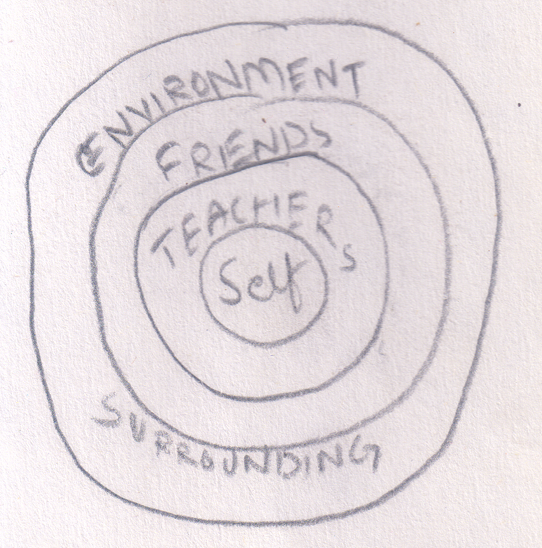
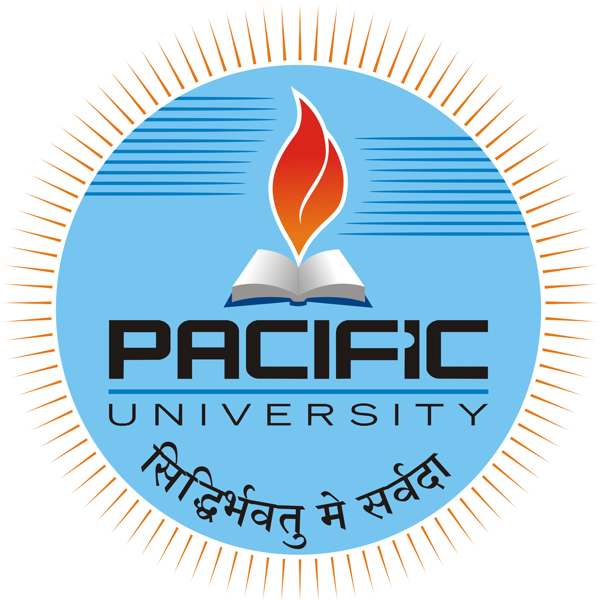

Mohit Gupta
I like to observe, find concerns and try to work on them.

2025 -

OpenUpLearning : A platform for curious learners with focus on providing credible resources, collaborative environment and community of experts.
2022 - 2025
EPAM Systems : This was the first organization that I had joined.
- Learned to keep aside my ego and be considerate to others suggestions with a fresh mind.
- Learned to collaborate with teammate, and make contribution towards a concerning goal.
- Learned to approach a problem, ask questions, seek help when needed while being independent as well.
- Learned to think before jumping to code (Pen paper goes a long way) and look at many approaches to solve a problem and measure pros and cons.
- Learned to take feedback, give feedback and always looking for opportunity to up lift the team.
- Learned to observe others quailty and appreciate them.
- Learned to lead team with example and not just by empty words.
2018 - 2022

College : Nothing happened, just me struggling to be educated.